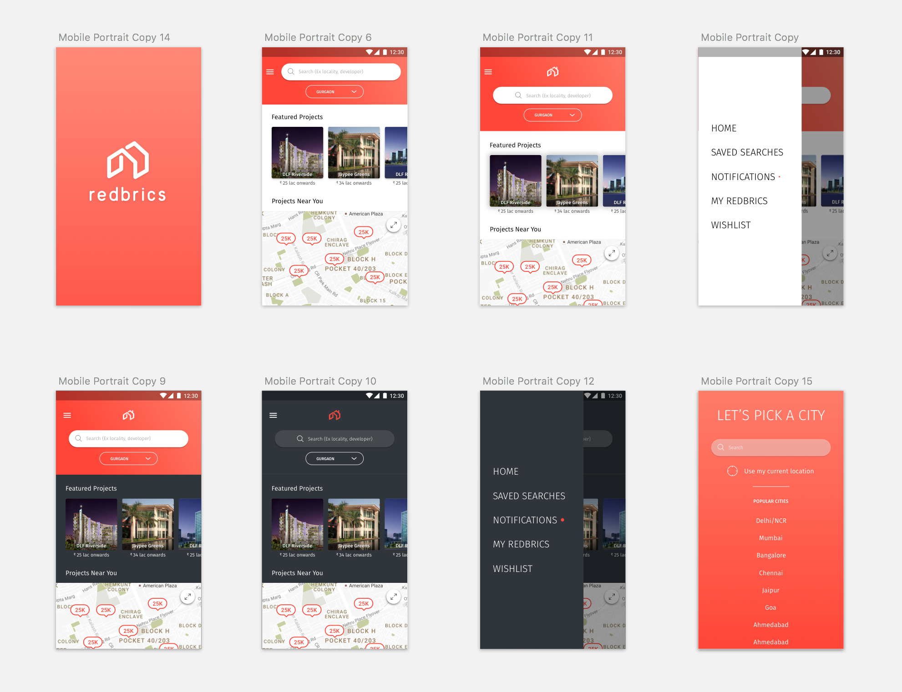
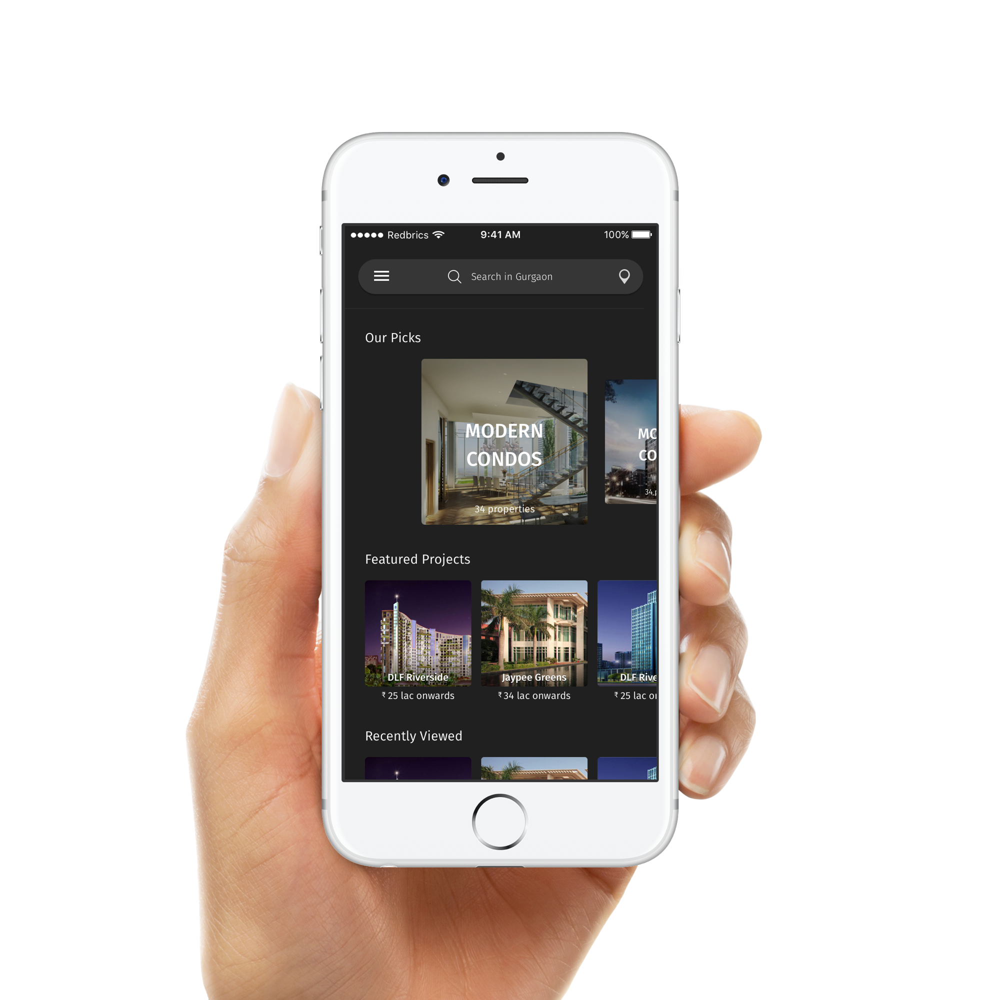
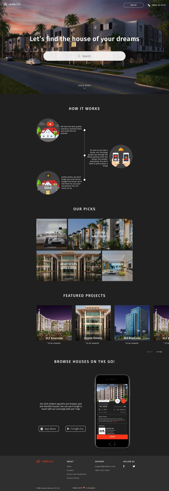
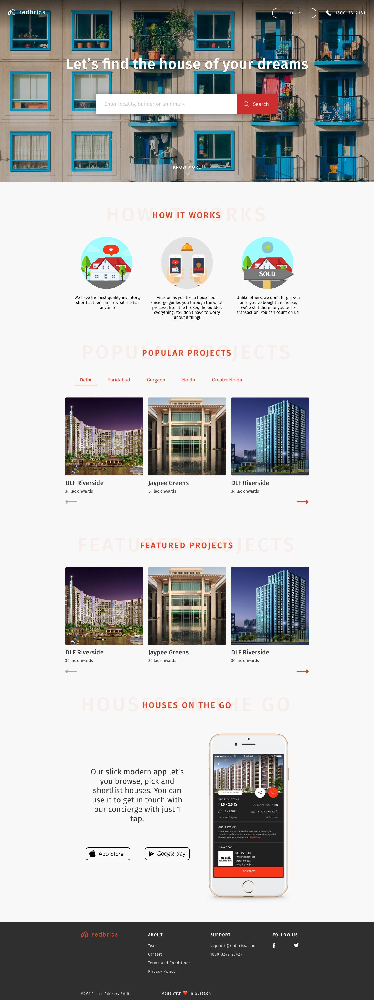
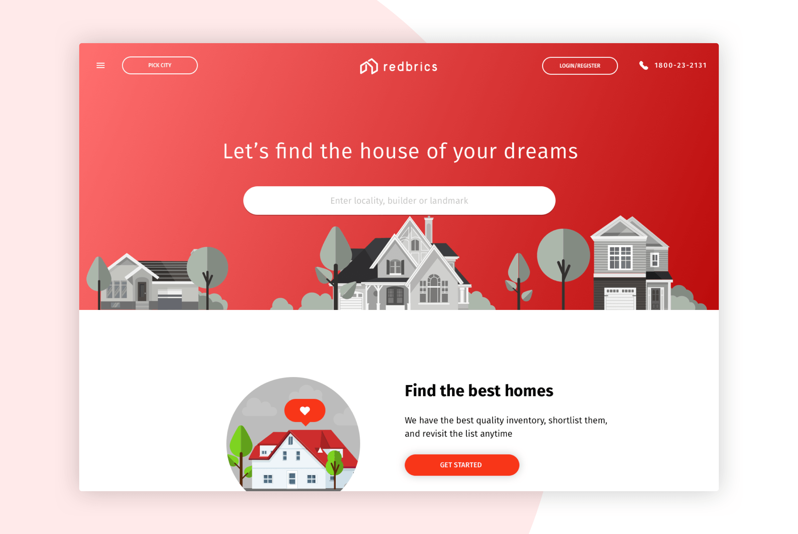
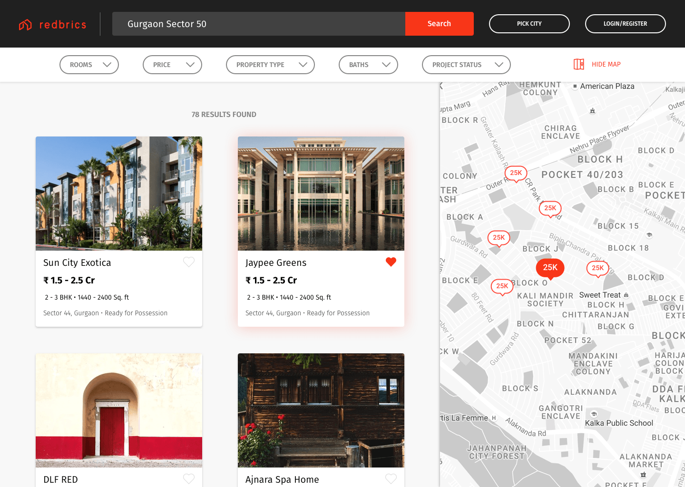
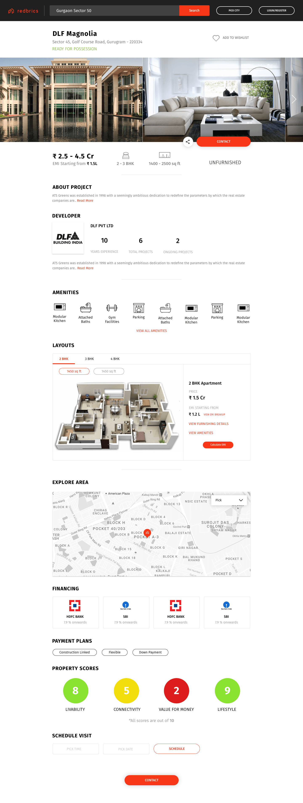

I worked on Redbrics from December 2016 till February 2017. This period involved designing across iOS, Android and Web.
I was approached by the founder of Redbrics due to my experience working previously at Housing.com which is a very well established name in the Real Estate space.
As I started exploring a UI for Redbrics, I came up with a few options that differentiated it from it's competitors while also maintaining a UX that feels familiar.
Here are some of my initial explorations,

As you see above, while exploring I felt that the dark UI really makes the photos of the houses pop. Moreover, I felt that it went better with the red accent color. On further cleaning up of the interface, this is what I came up with.

For the onboarding, the client briefed me that he wants the user to know about 3 basic things.
After taking this into consideration, I came up with the following onboarding prototype using Principle.
I tried to carry forward the same dark aesthetic of the app to the Web. But does Dark UI work on the web? I still gave it a shot. Check it out below

Although I personally really liked how it looked, I couldn't say the same for the client. So on feedback form the client, I worked on an iteration that was the exact opposite and was much lighter. But still carried the brand's aesthetic that I had made for the app.

After doing this I felt that it's never a good idea to show a house on your real estate website that you can't sell. And the client at that moment did not have good photos of his properties on sale. I took on the task of creating a vector based aesthetic for the landing page which I personally really liked.

This gave Redbrics a look that separated it from it's competitors in India that used photos for their landing page instead.
After this I started tackling the inner pages. The main meat of the platform was the search and the listing page. The search listing page was a 2 pane layout that showed the corresponding location of the property that you would hover on the map.

The listing detail page has clear CTA's for Contacting the developer and saving the property to one's wishlist. All of this in a modular layout.
